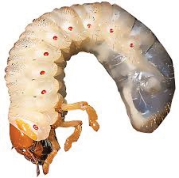

Management of sweet potato weevil: This pest can be managed by planting weevil-
free planting materials and avoiding rotating sweet potatoes with alternative host
crops to disrupt the weevil life cycle. It is recommended that plant residues be
removed and destroyed after harvest to eliminate potential breeding sites. Ensure
that tubers are well-covered with soil, and use mulch to prevent weevils from
accessing the tubers. Use pheromone traps to monitor and reduce adult weevil
populations. Harvest sweet potatoes when they reach maturity to reduce their
exposure to weevils. Store harvested sweet potatoes in clean, ventilated, and
weevil-free environments.
(b) White grub
White grubs are the larvae of various
beetle species, such as scarab beetles
(Figure 4.5). They feed on sweet
potato roots, causing significant crop
damage by disrupting root systems,
which can lead to reduced plant
growth and yield.

Figure 4.5: White grub
Source: https://www.gardentech.com/
insects/white-grubs
Management of white grub: This can be managed through crop rotation and
soil cultivation to expose the larvae to predators and use natural enemies such as
starling birds and ground beetles.
(c) Flea beetles
Fleas are small jumping beetles about 1-3 mm long with shiny black, brown, or
metallic-coloured bodies (Figure 4.6). They feed on the leaves of potato plants,
causing small holes and stippling, which can weaken plants and reduce yields.
Their larvae damage sweet potato tubers.
Management of flea beetles: Effective management includes using row covers,
rotating crops, and applying insecticides if necessary. Consult agricultural experts
for recommended insecticide to use against flea beetles in potatoes.